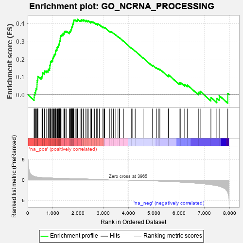
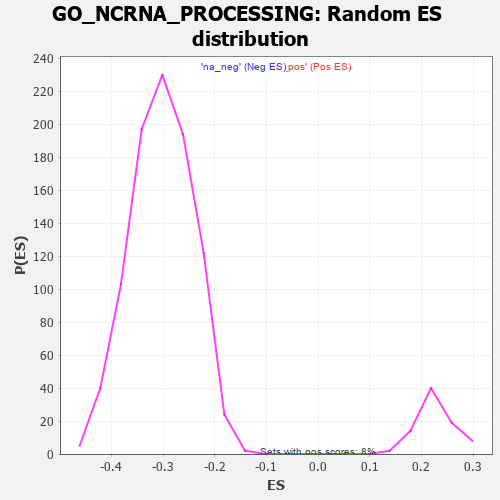

| | | Dataset | 7d |
| Phenotype | NoPhenotypeAvailable |
| Upregulated in class | na_pos |
| GeneSet | GO_NCRNA_PROCESSING |
| Enrichment Score (ES) | 0.4239175 |
| Normalized Enrichment Score (NES) | 1.8634411 |
| Nominal p-value | 0.0 |
| FDR q-value | 0.10026244 |
| FWER p-Value | 0.699 |
Table: GSEA Results Summary

Fig 1: Enrichment plot: GO_NCRNA_PROCESSING
Profile of the Running ES Score & Positions of GeneSet Members on the Rank Ordered List
| PROBE | GENE SYMBOL | GENE_TITLE | RANK IN GENE LIST | RANK METRIC SCORE | RUNNING ES | CORE ENRICHMENT | | 1 | THADA | | | 253 | 0.931 | -0.0156 | Yes |
| 2 | LAGE3 | | | 257 | 0.914 | 0.0003 | Yes |
| 3 | DPH3 | | | 287 | 0.844 | 0.0118 | Yes |
| 4 | QTRT2 | | | 316 | 0.792 | 0.0223 | Yes |
| 5 | BOP1 | | | 330 | 0.768 | 0.0344 | Yes |
| 6 | ELP4 | | | 365 | 0.734 | 0.0432 | Yes |
| 7 | LARP7 | | | 369 | 0.731 | 0.0559 | Yes |
| 8 | RRP15 | | | 372 | 0.722 | 0.0686 | Yes |
| 9 | POP1 | | | 376 | 0.720 | 0.0811 | Yes |
| 10 | RPP25 | | | 401 | 0.699 | 0.0905 | Yes |
| 11 | RRP8 | | | 403 | 0.699 | 0.1029 | Yes |
| 12 | WDR12 | | | 530 | 0.620 | 0.0979 | Yes |
| 13 | WDR55 | | | 569 | 0.605 | 0.1039 | Yes |
| 14 | DDX56 | | | 584 | 0.600 | 0.1128 | Yes |
| 15 | POP5 | | | 585 | 0.599 | 0.1235 | Yes |
| 16 | PARN | | | 660 | 0.572 | 0.1243 | Yes |
| 17 | NOC4L | | | 671 | 0.569 | 0.1332 | Yes |
| 18 | UTP4 | | | 751 | 0.545 | 0.1329 | Yes |
| 19 | GAR1 | | | 806 | 0.530 | 0.1355 | Yes |
| 20 | IMP4 | | | 818 | 0.526 | 0.1435 | Yes |
| 21 | NOL6 | | | 870 | 0.514 | 0.1462 | Yes |
| 22 | WDR75 | | | 874 | 0.513 | 0.1550 | Yes |
| 23 | POP7 | | | 876 | 0.511 | 0.1640 | Yes |
| 24 | ADAT3 | | | 890 | 0.508 | 0.1714 | Yes |
| 25 | NSUN2 | | | 901 | 0.506 | 0.1792 | Yes |
| 26 | NHP2 | | | 906 | 0.505 | 0.1877 | Yes |
| 27 | WDR3 | | | 951 | 0.495 | 0.1909 | Yes |
| 28 | BMS1 | | | 984 | 0.487 | 0.1956 | Yes |
| 29 | NOP9 | | | 993 | 0.485 | 0.2032 | Yes |
| 30 | CPSF1 | | | 1005 | 0.482 | 0.2104 | Yes |
| 31 | PWP2 | | | 1030 | 0.477 | 0.2159 | Yes |
| 32 | CTU2 | | | 1044 | 0.475 | 0.2227 | Yes |
| 33 | WDR46 | | | 1074 | 0.468 | 0.2274 | Yes |
| 34 | FCF1 | | | 1100 | 0.463 | 0.2325 | Yes |
| 35 | RRP12 | | | 1102 | 0.463 | 0.2406 | Yes |
| 36 | DDX47 | | | 1103 | 0.463 | 0.2489 | Yes |
| 37 | UTP15 | | | 1135 | 0.457 | 0.2531 | Yes |
| 38 | DDX27 | | | 1163 | 0.452 | 0.2578 | Yes |
| 39 | GRSF1 | | | 1164 | 0.452 | 0.2659 | Yes |
| 40 | CLP1 | | | 1182 | 0.450 | 0.2717 | Yes |
| 41 | ELP3 | | | 1223 | 0.442 | 0.2745 | Yes |
| 42 | NSUN5 | | | 1230 | 0.442 | 0.2817 | Yes |
| 43 | PUS10 | | | 1249 | 0.438 | 0.2872 | Yes |
| 44 | DUS4L | | | 1254 | 0.438 | 0.2945 | Yes |
| 45 | WDR36 | | | 1260 | 0.437 | 0.3017 | Yes |
| 46 | NOB1 | | | 1284 | 0.433 | 0.3065 | Yes |
| 47 | UTP18 | | | 1286 | 0.432 | 0.3141 | Yes |
| 48 | DKC1 | | | 1292 | 0.431 | 0.3212 | Yes |
| 49 | TPRKB | | | 1296 | 0.430 | 0.3285 | Yes |
| 50 | UTP25 | | | 1319 | 0.425 | 0.3333 | Yes |
| 51 | DTWD2 | | | 1354 | 0.418 | 0.3364 | Yes |
| 52 | DDX51 | | | 1397 | 0.411 | 0.3384 | Yes |
| 53 | WDR4 | | | 1399 | 0.410 | 0.3456 | Yes |
| 54 | LSM6 | | | 1444 | 0.402 | 0.3472 | Yes |
| 55 | WBP11 | | | 1451 | 0.400 | 0.3536 | Yes |
| 56 | TRNT1 | | | 1479 | 0.394 | 0.3572 | Yes |
| 57 | PIN4 | | | 1540 | 0.385 | 0.3564 | Yes |
| 58 | IMP3 | | | 1648 | 0.365 | 0.3493 | Yes |
| 59 | ESF1 | | | 1655 | 0.364 | 0.3550 | Yes |
| 60 | MRM2 | | | 1689 | 0.358 | 0.3572 | Yes |
| 61 | DDX18 | | | 1711 | 0.355 | 0.3609 | Yes |
| 62 | ERCC2 | | | 1712 | 0.354 | 0.3672 | Yes |
| 63 | ELP1 | | | 1736 | 0.348 | 0.3705 | Yes |
| 64 | RTCB | | | 1739 | 0.347 | 0.3765 | Yes |
| 65 | KTI12 | | | 1749 | 0.345 | 0.3815 | Yes |
| 66 | AGO2 | | | 1767 | 0.343 | 0.3855 | Yes |
| 67 | C1D | | | 1777 | 0.341 | 0.3904 | Yes |
| 68 | URM1 | | | 1781 | 0.340 | 0.3961 | Yes |
| 69 | DTWD1 | | | 1799 | 0.337 | 0.4000 | Yes |
| 70 | PTCD1 | | | 1808 | 0.335 | 0.4050 | Yes |
| 71 | RPF2 | | | 1814 | 0.335 | 0.4103 | Yes |
| 72 | CTU1 | | | 1822 | 0.333 | 0.4154 | Yes |
| 73 | DDX52 | | | 1835 | 0.331 | 0.4198 | Yes |
| 74 | UTP20 | | | 1882 | 0.322 | 0.4197 | Yes |
| 75 | TSR1 | | | 1944 | 0.314 | 0.4175 | Yes |
| 76 | PUS3 | | | 1972 | 0.309 | 0.4196 | Yes |
| 77 | HELQ | | | 1982 | 0.307 | 0.4239 | Yes |
| 78 | DDX49 | | | 2073 | 0.295 | 0.4177 | No |
| 79 | CPSF4 | | | 2118 | 0.288 | 0.4173 | No |
| 80 | DUS1L | | | 2122 | 0.288 | 0.4220 | No |
| 81 | UTP11 | | | 2195 | 0.277 | 0.4178 | No |
| 82 | TFB1M | | | 2212 | 0.275 | 0.4207 | No |
| 83 | NSUN4 | | | 2301 | 0.260 | 0.4141 | No |
| 84 | UTP23 | | | 2309 | 0.259 | 0.4178 | No |
| 85 | TBL3 | | | 2379 | 0.248 | 0.4134 | No |
| 86 | TYW1 | | | 2398 | 0.246 | 0.4156 | No |
| 87 | KAT2B | | | 2502 | 0.226 | 0.4065 | No |
| 88 | KRR1 | | | 2504 | 0.226 | 0.4104 | No |
| 89 | RCL1 | | | 2531 | 0.222 | 0.4110 | No |
| 90 | RIOK1 | | | 2586 | 0.215 | 0.4080 | No |
| 91 | NOP2 | | | 2648 | 0.206 | 0.4039 | No |
| 92 | DDX1 | | | 2718 | 0.196 | 0.3986 | No |
| 93 | ELP2 | | | 2773 | 0.187 | 0.3950 | No |
| 94 | RIOK2 | | | 2775 | 0.187 | 0.3982 | No |
| 95 | PA2G4 | | | 2840 | 0.177 | 0.3933 | No |
| 96 | NOL10 | | | 2975 | 0.154 | 0.3789 | No |
| 97 | RRP1B | | | 2986 | 0.152 | 0.3803 | No |
| 98 | CSTF2 | | | 3029 | 0.145 | 0.3776 | No |
| 99 | SRRT | | | 3050 | 0.143 | 0.3776 | No |
| 100 | MRM1 | | | 3250 | 0.114 | 0.3542 | No |
| 101 | PUS7 | | | 3254 | 0.113 | 0.3559 | No |
| 102 | SMAD3 | | | 3303 | 0.105 | 0.3516 | No |
| 103 | TYW5 | | | 3309 | 0.104 | 0.3528 | No |
| 104 | SMAD1 | | | 3337 | 0.099 | 0.3512 | No |
| 105 | TUT4 | | | 3394 | 0.090 | 0.3456 | No |
| 106 | ERI1 | | | 3486 | 0.079 | 0.3354 | No |
| 107 | NOP10 | | | 3573 | 0.064 | 0.3256 | No |
| 108 | NOLC1 | | | 3623 | 0.056 | 0.3204 | No |
| 109 | SBDS | | | 3640 | 0.053 | 0.3193 | No |
| 110 | DGCR8 | | | 3792 | 0.029 | 0.3005 | No |
| 111 | ADAT1 | | | 4101 | -0.024 | 0.2616 | No |
| 112 | NOP56 | | | 4128 | -0.028 | 0.2588 | No |
| 113 | TYW3 | | | 4130 | -0.029 | 0.2592 | No |
| 114 | DDX17 | | | 4161 | -0.035 | 0.2560 | No |
| 115 | RRS1 | | | 4256 | -0.051 | 0.2449 | No |
| 116 | DUS3L | | | 4570 | -0.109 | 0.2070 | No |
| 117 | TRPT1 | | | 4945 | -0.186 | 0.1626 | No |
| 118 | PRKDC | | | 4955 | -0.189 | 0.1648 | No |
| 119 | DDX54 | | | 5093 | -0.222 | 0.1513 | No |
| 120 | NSA2 | | | 5168 | -0.241 | 0.1462 | No |
| 121 | DDX21 | | | 5231 | -0.252 | 0.1428 | No |
| 122 | OSGEP | | | 5566 | -0.337 | 0.1062 | No |
| 123 | NVL | | | 5572 | -0.338 | 0.1116 | No |
| 124 | TUT7 | | | 5997 | -0.471 | 0.0660 | No |
| 125 | MAK16 | | | 6058 | -0.493 | 0.0671 | No |
| 126 | SMAD2 | | | 6216 | -0.541 | 0.0568 | No |
| 127 | ADAT2 | | | 6317 | -0.582 | 0.0544 | No |
| 128 | KRI1 | | | 6755 | -0.787 | 0.0128 | No |
| 129 | LYAR | | | 6828 | -0.830 | 0.0184 | No |
| 130 | REXO4 | | | 7253 | -1.126 | -0.0155 | No |
| 131 | XRN2 | | | 7488 | -1.384 | -0.0206 | No |
| 132 | MOCS3 | | | 7581 | -1.523 | -0.0051 | No |
| 133 | MDN1 | | | 7921 | -3.061 | 0.0064 | No |
Table: GSEA details [plain text format]

Fig 2: GO_NCRNA_PROCESSING: Random ES distribution
Gene set null distribution of ES for GO_NCRNA_PROCESSING